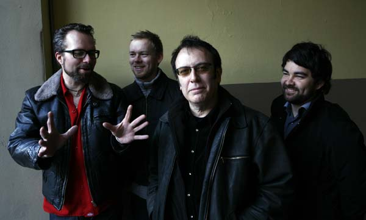

пресс-релиз

Уильям Трояни, Билл или Билли, как его зовут друзья, родился в Нью-Йорке в 1949-м году. Он начал играть на басу в 11 лет и вскоре обратился к р-н-б-музыке и блюзу. В двадцатилетнем возрасте Билл уже был профессиональным музыкантом. Проживая постоянно на восточном берегу, он гастролировал и записывался с такими музыкантами как Эдди Киркланд, Том Расселл и Попа Чабби.
В конце 90-х Билла Трояни поневоле занесло в Норвегию, куда он переехал вслед за своми детьми - норвежцами наполовину. В Осло он начал музыкальную карьеру заново, что не помешало ему стать ведущим скандинавским басистом блюза, ритм-н-блюза и корневой музыки. Этому способствовали богатый опыт и поистине энциклопедические знания всей американской музыки 20-го века, которую ему приходилось играть в разных ситуациях, включая р-н-б и джазовые бессмертные стандарты и даже эстрадные хиты, игранные на свадьбах.
В 1999-м году Билл Трояни основал хаусбенд главного блюзового клуба Осло "Muddy Waters" вместе с молодым гитаристом Кидом Андерсеном, впоследствии - гитаристом групп Чарли Масселуайта и "Найткетс" Рика Эстрина. Хаусбенд играл в клубе до нескольких раз в неделю с разными норвежскими блюзменами вплоть до закрытия Muddy Waters в 2006-м году. В то же время группа была основой для норвежских гастролей в клубах и на фестивалях для десятков американских артистов. Знание корневой музыки и опыт позволяли Биллу в сжатые сроки готовить и аранжировывать новый материал.
В Норвегии Билл Трояни в качестве басиста записался на значительной части выходивших блюзовых пластинок. А в 2007-м году он со своей группой, которая теперь стала называться Billy T Band, записал диск "A Little Mixed Up", где он поет самостоятельно отобранные и аранжированные песни. 25-го января 2010 в Осло была с шумом презентована вторая пластинка "L.O.V.E. (Just a Silly Notion)" с песнями из текущей концертной программы.
Постоянный член ритм-секции - 25-летний ударник Александр Петтерсен начал играть с 12-ти. Он оказался настолько талантлив, что буквально через несколько лет попал в хаус-бенд Muddy Waters. Вместе с Биллом Трояни они много раз приезжали в Россию, аккомпанируя американцам и норвежцам - Джуниору Ватсону, Митчу Кашмару, Рику Холмстрому, Киду Андерсену, Алексу Шульцу, Видару Бюску.
Гитарист Хокон Хэйе - специалист по вест-коаст-блюзу, р-н-б и вест-сайд блюзу Чикаго. Его конек - чувство стиля, сдержанность, лаконичность и лишь иногда - стильная несдержанность. В многочисленных блюзовых составах Осло Хокон играл роль аккомпанирующего гитариста рядом с яркими солистами, создавая основу аранжировок.
Еще один участник группы Билли Т Бенд - гитарист Ян Йоханнессен, которого все зовут просто Фредди. Хотя его второе имя - Фредрик, он получил произвище в честь великого гитариста Фредди Кинга. Воистину, норвежский Фредди играет с драйвом и звуком американского классика. Гитарные партии Фредди придают песням эмоциональность и экспрессию, оставаясь достаточно сложными.
Опыт профессионала Билла Трояни в том, что жизнь сталкивала его как с гениальными, так и с миллионами кошмарных музыкантов, что навсегда отбило желание и всякую возможность играть плохую музыку. Действительно, вкус Билла безупречен. Он подбирает для своей группы и поет скрытые досель от современного слушателя песни-жемчужины из записей р-н-б, блюза и корневой американской музыки 20-го века. А Billy T Band придает песням молодое звучание.